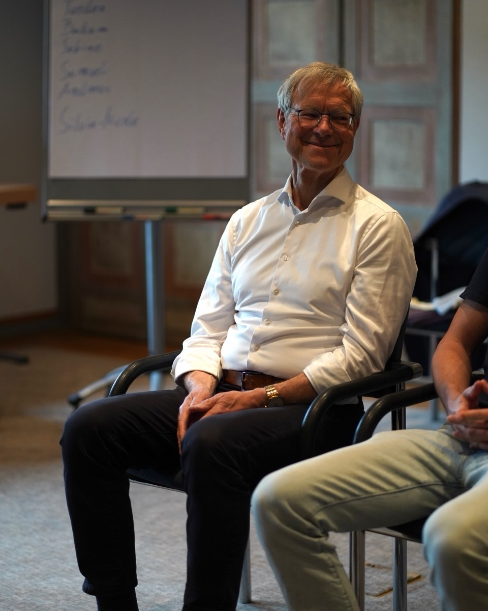

Systemische Aufstellungsarbeit seit 1994
Seit über 25 Jahren begleitet Bertram Böhm Menschen und Unternehmen dabei, verborgene Dynamiken sichtbar zu machen — für mehr Klarheit, Ordnung und neue Handlungsmöglichkeiten.
Familiäre Verstrickungen erkennen und lösen. In der Aufstellung zeigen sich verborgene Bindungen, unterbrochene Zugehörigkeiten und unbewusste Loyalitäten — der erste Schritt zu einer guten Ordnung.
Mehr erfahrenWenn Teams nicht funktionieren oder Führung ins Leere läuft, liegen die Ursachen oft tiefer als gedacht. Die Organisationsaufstellung macht systemische Zusammenhänge in Unternehmen sichtbar.
Mehr erfahrenKlarheit bei konkreten Entscheidungen und rechtlichen Konflikten: Die Problemaufstellung hilft, festgefahrene Situationen aus einer neuen Perspektive zu betrachten und Lösungswege zu finden.
Mehr erfahren
Mein Name ist Bertram Böhm. Als Rechtsanwalt und systemischer Aufsteller verbinde ich zwei Welten, die sich auf den ersten Blick kaum berühren — und doch beide nach Ordnung suchen. Diese besondere Kombination ermöglicht mir einen klaren, strukturierten Blick auf die verborgenen Dynamiken in Familien und Organisationen.
In meiner Praxis in Eching bei München arbeite ich mit Einzelpersonen, Paaren, Familien und Unternehmen. Ob es um familiäre Verstrickungen, berufliche Blockaden oder rechtliche Konflikte geht — die Aufstellungsarbeit eröffnet neue Perspektiven.
Mehr über mich„Als Rechtsanwalt und Aufsteller verbinde ich zwei Welten: die Ordnung des Rechts und die Ordnung der Systeme.“
— Bertram Böhm
Die Aufstellung hat mir geholfen, ein Thema zu verstehen, das mich seit Jahrzehnten begleitet hat. Zum ersten Mal konnte ich sehen, was mich unbewusst an meine Herkunftsfamilie gebunden hat — und einen Weg in die Freiheit finden.
Als Unternehmer war ich skeptisch. Doch die Organisationsaufstellung hat Dynamiken in meinem Team aufgezeigt, die mir trotz jahrelanger Erfahrung verborgen geblieben waren. Die Zusammenarbeit hat sich seither spürbar verbessert.
Herr Böhm arbeitet mit einer besonderen Ruhe und Klarheit. Er schafft einen geschützten Raum, in dem sich auch schwierige Themen zeigen dürfen. Ich bin dankbar für diese Erfahrung und die Veränderungen, die sie in meinem Leben angestoßen hat.